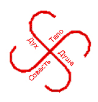

Откуда пришли предки Русов и Ариев
Повсеместно бытует мнение, что настоящая история Cлавян и Aриев начинается с христианизации Руси. Получается, до этого события славяне и арии, как бы и не существовали, поскольку, так или иначе, человек размножаясь, обживает территорию, оставляет после себя след в виде системы верований, письменности, языка, правил, регулирующих взаимоотношения соплеменников, архитектурных построек, обрядов, сказаний и легенд.
Основываясь же на современной истории, письменность и грамота пришли к славянам и ариям из Греции, право — из Рима, религия — из Иудеи.
Поднимая славянскую тему, первое, с чем связывают славянство — это язычество. Но позвольте обратить Ваше внимание на суть данного слова: «язык» означает народ, «ник» — никакой, неизвестный, т.е. язычник — это представитель чуждой незнакомой веры.
Странно думать, что всё, что было задолго до христианства, нарабатывалось, собиралось, передавалось из поколения в поколение — ересь и заблуждения. Получается, что все люди на Земле веками жили в иллюзии, самообмане и заблуждениях.
Исследование многих источников богатейшего Славяно-Арийского Наследия Предков, заключается в том, что Славяне и Aрии появились на Земле задолго до представителей других народов. Наша Земля имела название Мидгард, где «мид» или «middle» означает средний, «гард» — град, город, т.е. средний мир (вспомните шаманское представление о строении Вселенной, Вавилонян, Шумер: Святое дерево Eridu, Германцев: Yggdrasil (ясень) или Irminsul, Греки: Дерево Гесприд, Евреев: Дерево Жизни (Кабала) (Etz Chaijm), Индийцы: Дерево Asvattha, Латыши: Дуб, Майя: Wacah Chan (всемирное дерево) и Yax Cheel Cab (Первое дерево мира), Персов: Дерево Simurgh (мать всех деревьев)).
Около 460 500 лет назад наши предки приземлились на северном полюсе Мидгард-Земли. С того периода наша планета претерпела значительные изменения, как климатические, так и географические.
В те далёкие времена Северный полюс был богатым растительным и животным миром материком, островом Буяном, на котором произрастала буйная растительность, который и обжили наши предки.
Славянский и Арийский Род состоял из представителей четырёх народов: Да`Арийцев, Х`Арийцев, Расенов и Святорусов.
Первыми на Мидгард-Землю прибыли Да`Арийцы. Они пришли из Звёздной системы созвездия Зимун или Малой Медведицы, земли Раи. Цвет их глаз — серый, серебряный — соответствовал солнцу их системы, которое имело название Тара (Рис.1). Они и назвали северный материк, где поселились, Даарией.
Далее последовали Х`Арийцы. Их родина — созвездие Орион, земля Троара, солнце — Рада — зелёного цвета, который запечатлелся в цвете их глаз.
Потом прибыли Святорусы — голубоглазые славяне из созвездия Макоши или Большой Медведицы, называвшие себя Свага.
Позже появились кареглазые Расены из созвездия Расы и земли Ингард, системы Даждьбог-Солнца или современного бета Льва.
рис.1
Если говорить о народностях, относящихся к четырём Великим Славяно-Арийским Родам, то от Да`Арийцев пошли сибирские русичи, северо-западные германцы, датчане, голландцы, латыши, литовцы, эстонцы и т.д.
От Рода Х`Арийцев произошли восточные и поморские русы, скандинавы, англосаксы, норманны (или Муромцы), галлы, беловодские русичи.
Род Святорусов — голубоглазых славян — представляют северные русские, белорусы, поляне, поляки, восточные пруссы, сербы, хорваты, македонцы, скотты, ирландцы, ассы с Ирия, т.е. ассирийцы.
Внуки Даждьбожьи, Расены — это западные Росы, этруски (этнос русский или, как их называли греки — эти русские), молдаване, италийцы, франки, фракийцы, готы, албанцы, аварцы и т.п.
(рис.2)
рис.2
Здесь был исток древнего ведического знания, крупицы которого сейчас разбросаны по всей Земле среди различных народов.
Но пришлось нашим предкам пожертвовать своей родиной ради спасения Мидгард-Земли. В те далёкие времена Земля имела 3 спутника: Луну Лелю с периодом обращения 7 дней, Фатту — 13 дней и Месяц — 29,5 дней.
Тёмные Силы из техногенной галактики 10 000 планет (тьма соответствует 10 000), или, как ещё называют, Пекельного мира (т.е. земли там ещё не до конца развиты, только «пекутся») облюбовали себе Лелю, развернули на ней свои силы и направили свой удар на Мидгард-Землю.
Спас Землю наш предок и Высший Бог — Тарх, сын Бога Перуна, разбив Лелю и разрушив царство Кащеев. Отсюда обычай бить яйца на Пасху, что символизирует победу Тарха Перуновича над Кащеем — смертным бесом, нашедшим свою смерть в яйце (прообраз Луны).
Событие это произошло 111 818 лет назад и стало новой точкой отсчёта летоисчисления от Великого Переселения. Так воды Лели хлынули на Мидгард-Землю, затопив Северный континент. Даария вследствие этого ушла на дно Северного Ледовитого (Студёного) океана.
Это стало причиной Великого Переселения славянских родов из Дарии в Расению по перешейку на земли, лежащие южнее (остатки перешейка сохранились в виде островов Новая Земля).
Великое Переселение длилось 16 Лет. Таким образом, 16 стало священным числом для славян. На нём основан славянский Сварожий круг или зодиак, состоящий из 16 Небесных Чертогов.
16 лет — это полная часть круга Лет в 144 года, состоящего из 16 лет, проходящих через 9 стихий, где последний 16 год считался священным.
Постепенно наши предки заселили территорию от гор Рипейских, покрытых репейником, или Уральских, что значит лежащих у Солнца: У Ра (Солнце, Свет, Сияние) Л (ложе), до Алтая и реки Лены, где Ал или Альность — это высшая структура, отсюда и реальность — повторение, отражение Альности; тай — вершина, т.е. Алтай — это и горы, хранящие в себе богатейшие залежи рудников, и средоточие энергии, место Силы. От Тибета и до Индийского Океана на юге (Иран), позднее юго-западнее (Индия).
106 790 лет назад наши предки вновь построили Асгард (город Асов) на слиянии Ирия и Оми, воздвигнув Алатырь-Гору — храмовый комплекс в 1000 Аршин высотой (более 700 м), состоящий из четырёх Капищ (Храмов) пирамидальной формы, расположенных друг над другом.
И так расселилась Святая Раса: Роды Асов — Богов, живущих на Земле, Страны Асов по всей территории Мидгард-Земли, размножились и стали Великим Родом, образовав страну Асов — Асию, по-современному — Азию, построив государство Ариев — Великую Тартарию.
Сами страну они свою называли Беловодье от названия реки Ирий, на которой был построен Асгард Ирийский (ирий — белый, чистый).
Сибирь — это северная часть страны, т.е. Северный Истинно Божественный Ирий).
Позднее Роды Расы Великой, гонимые суровым даарийским ветром стали уходить дальше на юг, расселяясь по разным материкам. Князь Сканд заселил северную часть Венеи.
Позднее эта территория стала называться Сканда (и) навь(и)я, т.к., умирая князь сказал, что Дух его после смерти будет защищать эту Землю(навья — это душа умершего, живущего в мире Нави в отличие от мира Яви).
Роды Ванов заселили Закавказье, потом из-за засухи переселились южнее Скандинавии, на территорию современных Нидерландов. В память о своих Предках жители Нидерландов сохраняют приставку Ван в своих фамилиях (Ван Гог, Ван Бетховен и т.п.).
Роды Бога Велеса — жители Шотландии и Ирландии в честь своего прародителя и покровителя назвали одну из провинций Уэльс или Вельс.
Роды Святорусов заселили восточную и южную части Венеи, а также Прибалтику.
В восточной части расположилась страна Гардарика (страна множества городов), состоящая из Руси Новгородской, Поморской (Латвия и Пруссия), Руси Красной (Речи Посполитой), Руси Белой (Белоруссия), Малой (Киевская Русь), Срединной (Московия, Владимир), Карпатской (венгры, румыны), Серебряной (Сербы).
Роды Бога Перуна заселили Персию, х`Арийцы Аравию.
Роды Бога Ния поселились на материке Антлань и стали называться Антами. Там они жили совместно с коренным населением с кожей цвета Огня.
Вспомните хотя бы падение цивилизации Инков, когда индейцы приняли конкистадоров за Белых Богов, или другой факт — покровитель индейцев — летучий Змей Кейцакоатль, по описаниям белый человек с бородой.
Антлань (лань — обжитая территория, т.е. страна Антов) или, как называли греки — Атлантида — стала могущественной цивилизацией, где люди со временем стали злоупотреблять своими знаниями, вследствие чего, нарушив законы природы, они обрушили луну Фатту на Землю, сами же и затопили свой полуостров.
В результате катастрофы был сдвинут Сварожий круг или Зодиак, ось вращения Земли наклонилась набок, и Зима или по-славянски Марена стала закрывать своим снежным плащом Землю на треть года. Всё это произошло 13 020 лет назад и стало точкой отсчёта нового летоисчисления от Великого Похолодания.
Роды Антов переселились в страну Та-Кем, где жили с людьми с кожей цвета Мрака, учили их наукам, ремёслам, земледелию, строительству пирамидальных гробниц, отчего Египет стал называться страной гор рукотворных.
Первые четыре династии фараонов были белыми, потом стали готовить в фараоны избранников из коренных народов.
Позже произошла война между Великой Расой и Великим Драконом (китайцами), вследствие чего был подписан Мирный договор в Звёздном храме (обсерватории) между Асуром (Ас — земной Бог, Ур — обжитая территория) и Ариманом (Арим, Ариман — человек с более тёмным цветом кожи).
Данное событие произошло 7520 лет назад и стало точкой отсчёта нового летоисчисления от сотворения Мира в Звёздном храме.
Славяне и Арии назывались Асами — Богами, живущими на Земле, детьми небесных Богов — Создателей. Они никогда не были рабами, «бессловесным стадом», не имеющим права выбора.
Славяне и Арии никогда не работали (корень слова «работа» — «раб»), никогда силой не захватывали чужие территории (тиранами или тиренами их назвали греки за то, что не дали захватить свои земли), они трудились на благо своего Рода, были собственниками результатов своего труда.
Славяне и Арии свято чтили законы РИТА — законы Расы и Крови, не допускавшие кровосмесительных браков. За это русских часто называют расистами. Опять-таки, нужно зреть в корень, чтобы понять глубочайшую Мудрость наших Предков.
Земной шар, подобно магниту, представлен двумя противоположными полюсами. Белые народы населяли Северный положительный полюс, чёрные — южный отрицательный. Все физические и энергетические системы организма были настроены в соответствии с работой данных полюсов.
Поэтому при браке между белым и чёрным, ребёнок лишается поддержки рода по линии обоих родителей: +7 и -7 в сумме дают ноль. Такие дети более подвержены заболеваниям, т.к. лишены полноценной иммунной защиты, они зачастую становятся революционерами-агрессорами, протестующими против систем, их не принявших.
Сейчас получило массовое распространение индийское учение о чакрах, согласно которому в теле человека вдоль линии позвоночника расположено 7 основных чакр, но тогда возникает вопрос: почему энергия в области головы меняет свои знаки (+ / -): если правая сторона тела имеет положительный заряд, то правое полушарие будет иметь отрицательный.
Если энергия, подобно электрическому току, течёт по прямой, нигде не преломляясь, она не может просто так взять и поменять свой знак (+) на противоположный знак (-).
Наши предки говорили, что в теле человека находится 9 основных чакр: 7 расположены вдоль линии позвоночника, 2 — в области подмышечных впадин, образуя энергетический крест.
Таким образом, течение энергии преломляется в центре креста, меняя свой знак (+) на противоположный (-). Ещё Иисус Христос говорил, что каждый несёт свой крест, т.е. у каждого есть свой энергетический крест (рис.3)
рис.3
Сейчас учёные высмеивают представления древних о строении Вселенной, имеющей форму диска, покоящегося на трёх слонах, которые, в свою очередь, стоят на черепахе, плавающей в безбрежном мировом океане. Картина кажется наивной и глупой, если плоско смотреть на вещи.
Славяне и Арии же всегда славились образным мышлением, за каждым словом, каждым образом нужно искать череду смыслов. Плоский диск Земли ассоциировался с плоским обыденным мышлением и дуальным сознанием, мыслящим категориями ДА или НЕТ (Рис. 4)
рис. 4
Данный мир покоится на трёх слонах: материя, как основа Запада, идея — основа Арабского Востока и транцендентализм или мистицизм основа Индии, Тибета, Непала и т.п.
Черепаха — это исток, изначальное знание, откуда черпают свою энергию «слоны». Такой черепахой как раз и является Север для остальных народов, напрямую подключённый к Изначальному Знанию — океану Безграничного Знания и Абсолютной Истины (энергии).
Самый простой солярный символ Cлавян и Ариев — свастика, который повсеместно использовался Гитлером, что наложило негативный отпечаток на символ человеческой структуры.
С другой стороны, основная цель Гитлера — мировое господство, для достижения которой он использовал самое сильное и передовое оружие, он брал за основу не египетские иероглифы, не иудейские или арабские кабалистические знаки, а именно славянскую символику (Рис. 5).

рис. 5
Ведь, что такое Свастика — это изображение креста в движении, это гармоничное число четыре, указывающее на присутствие в любом потомке Славяно-Арийских народов Тела, которым его наделили родители, Души, которую в это тело заселили Боги, Духа — связи с Богами и защиты Предков и Совести, как мерила всех деяний человека.
Вспомним хотя бы праздник Купалы, когда люди омывались в реках (очищали тело), прыгали через костер (очищали Душу), ходили по углям (очищали Дух). Следующие с этим связные и известные праздники: Германия: Праздник летнего солнцестояния, Шведен: Midsommar, Дания и Норвегия: Sankt Hans, Эстония: Jaanipäev, Финляндия: Juhannus, Латвия: Jāņi, Испания: La noche de San Juan, Россия: День Ивана Купала.
Свастика также указывала на строение Вселенной, состоящей из нашего Мира Яви, двух миров Нави: тёмной Нави и светлой Нави, т.е. Слави, и мира Вышний Богов — Прави.
Зачастую учёные видят своего рода недоразвитость в многобожии Славян и Ариев. Но опять-таки, поверхностные суждения не дают понимания вопроса.
Славяне и Арии Богом Прародителем считают Великое Неведомое Существо, имя которому Ра-М-Ха (Ра — свет, сияние, М — мир, Ха — положительная сила), который проявился в Новую Реальность, от лицезрения этой реальности озарился Великим Светом радости, и от этого света радости родились различные Миры и Вселенные, Боги и Предки, прямыми потомками, т.е. детьми которых мы и являемся.
Гимн-Правьславление
Великий Ра-М-Ха, Единый Творец-Созидатель, Ты во Мирах всех – Жизни податель! Славим и Триславим, Тя все-Родно, от малаго и великаго, во Капищах и во Святилищах наша, на Городищах и на Погостах наша, во Градах и во селениях наша, во Священных Рощах и во Дубравах наша, на брегах Священных рек и озёр наша, за Священную Инглию, коия несёт нам Свет Любви и Радости, и освещает наша сердца и помыслы. Да будут вси деяния наша, да во Славу Твою, ныне и присно и от Круга до Круга! Тако бысть, тако еси, тако буди!
Если Рамха проявился в Новую Реальность, значит, существует ещё какая-то более высокая Старая Реальность, а над ней ещё и …
Чтобы это всё понять и познать, для Славян и Ариeв Богами и Предками был установлен Путь Духовного Возрождения и Совершенствования через созидание, осознание различных миров и бесконечностей, развития до уровня Богов, т.к. Славянские и Арийские Боги — это те же — Асы, населявшие различные Земли, созидающие на благо Рода, прошедшие Путь Духовного Совершенствования.
Образы Славянских и Арийских Богов не были и не могли быть фотографичными, они передавали не оболочку, не снимали копию, а передавали суть Божества, основное зерно и Божественную структуру.
Так Перун с поднятым мечом олицетворял защиту Родов, Сварог с мечом острием вниз хранил Древнюю Мудрость. Бог он на то и Бог, что мог принять различные обличия в Явном Мире, но Суть Его оставалась прежней.
Материалисты запада, привязанные к телу, отождествляющие физическую оболочку с человеком, не могут понять, что люди не горели в огне, а использовали огонь (вспомните огненные колесницы), как средство передвижения в другие миры и реальности.
Так Славянское и Арийское знание имеет богатейшую историю и культуру, корни той мудрости уходят в глубь веков и тысячелетий.
Мы, как прямые потомки наших Славянских Богов и Предков, имеем внутренний ключ к системе данного знания, открыв которое, мы
открываем Светлый Путь Духовного Развития и Совершенствования, мы открываем глаза и сердца, мы начинаем видеть, ведать, жить и понимать.
Вся Мудрость находится внутри человека, нужно только захотеть это увидеть и осознать. Наши Боги всегда рядом и готовы помочь в любую минуту, подобно нашим родителям, готовым жизнь положить за детей своих.
Только дети этого часто не понимают, ищут Правду в чужих домах, в странах заморских.
Родные родители всегда терпимы и добры к своим детям, обратитесь к ним, и они всегда помогут!